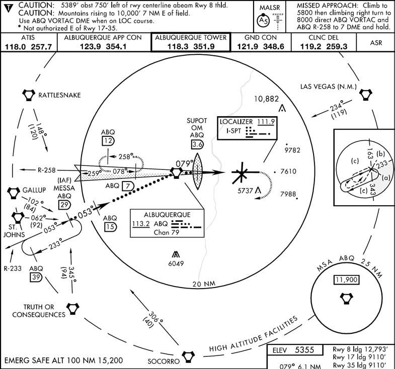
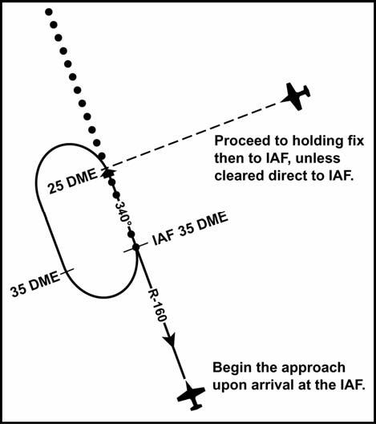
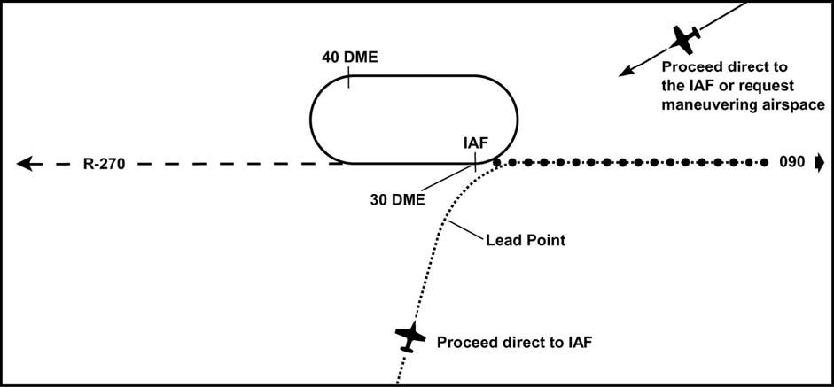
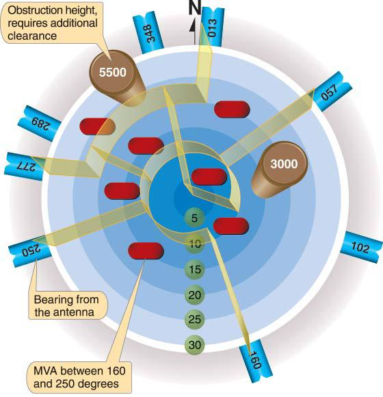
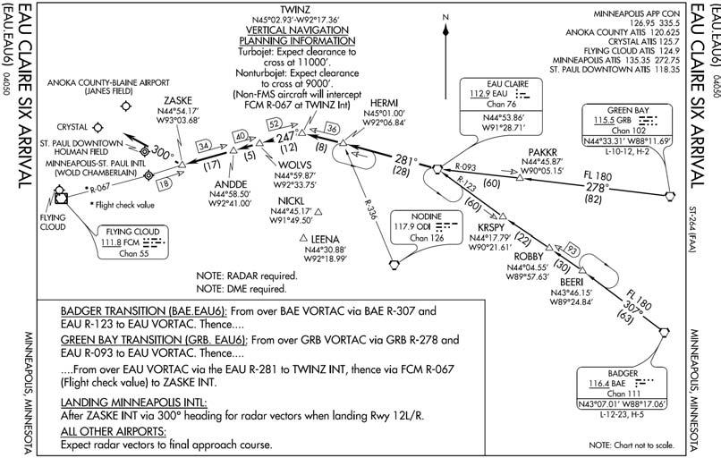
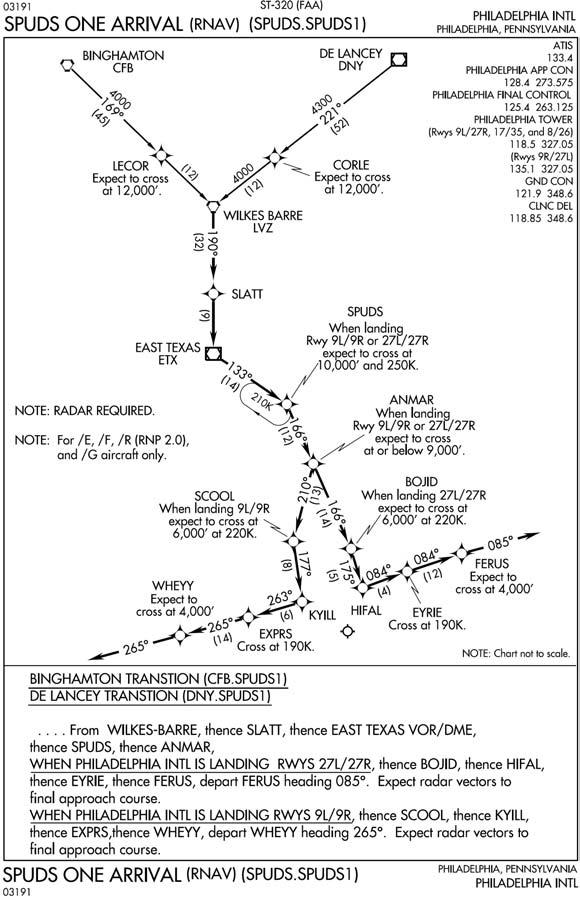

Chapter 9: ARRIVAL
9.1. En Route Descent Procedure/Technique.
9.1.1. En route. The en route descent frequently allows a pilot to transition from an en route altitude to the final approach instead of flying an entire FLIP IAP. It may be flown either via radar vectors or nonradar routings, using approved navigation aids. ATC will not insist on an en route descent. ATC will not authorize an en route descent if abnormal delays are anticipated, nor will they terminate the service without the pilot's consent except in an emergency.
9.1.2. Final Approach. The type of final approach to be flown must be understood by you and the controller (ILS, PAR, visual pattern, etc.). Except for radar finals, request an en route descent to a specific final approach. If the requested en route descent is to a radar final, select a backup approach that is compatible with existing weather and aircraft equipment. If you experience lost communications, you are automatically cleared to fly any published approach. For further guidance on lost communications, see the FIH.
9.2. Descent.
ATC requirements probably have more influence over when to begin the descent than any other single factor. Prior to requesting an enroute descent, consider your range, desired descent rate, weather, terrain, and low altitude fuel consumption. Pilots shall maintain last assigned altitude until receiving authorizations/clearance to change altitude. At that time, pilots are expected to comply with all published/issued restrictions.
9.2.1. Descend at an optimum rate (consistent with the operating characteristics of the aircraft) to 1,000 feet above the assigned altitude then reduce your rate of descent to 500 to
1,500 fpm until the assigned altitude is reached. If at any time you are unable to descend at a rate of at least 500 fpm, advise ATC. Advise ATC if it is necessary to level off at an intermediate altitude during descent. An exception to this is when leveling off at 10,000 feet MSL on descent, or 2,500 feet above airport elevation (prior to entering a Class B, Class C, or Class D surface area) when required for speed reduction.
9.2.1.1. NOTE: FAA controllers are not required to respond to clearance readbacks. However, if the readback is incorrect or incomplete, the controller should make corrections. Absence of a correction does not imply your readback was correct. The controller may not hear the mistaken readback. If you are unsure of the clearance and/or instructions, query the controller.
9.2.1.2. CAUTION: Descent gradients in excess of 10° (1,000 ft/nm) in IMC may induce spatial disorientation. In addition, exceeding a 10° descent gradient below 15,000 feet AGL substantially decreases margin for error in avoiding obstacles and terrain, and may not provide effective radar monitoring.
9.2.2. Starting Descent. Before starting descent, review the IAP, recheck the weather (if appropriate), check the heading and attitude systems, and coordinate lost communication procedures (if required). Review of the IAP should include, but is not limited to, the following: minimum and/or emergency safe altitudes, navigation frequencies, descent rates, approach minimums, missed approach departure instructions, and aerodrome sketch. The IAP shall be readily available to the pilot for reference throughout the procedure.
9.2.3. During Descent.
9.2.3.1. Descent Rate. During the descent, control descent rate and airspeed to comply with any altitude or range restrictions imposed by ATC.
9.2.3.2. Reduce Airspeed. Reduce airspeed to 250 KIAS or less when below 10,000 feet MSL as required by AFI 11-202V3.
9.2.3.3. Radar Vectors. When descending via radar vectors, remain oriented in relation to the final approach fix by using all available navigation aids. Have the IAP available for the approach to be flown along with an alternate or backup procedure to be used if available. Note the minimum safe, sector, or emergency safe altitudes. Once cleared for the approach, maintain the last assigned altitude and heading until established on a segment of a published route or IAP. If at any time there is doubt as to whether adequate obstacle clearance is provided or controller instructions are unclear, query the controller. The controller should inform you if radar contact is lost and provide you with a new clearance or additional instructions. If advised that radar contact is lost while in IMC and there is a delay in receiving new instructions, ask the controller for a new clearance or advise the controller of your intentions. This is particularly important if below minimum safe, sector, or emergency safe altitude.
9.3. Established on Course.
Established on course is defined as being within half full-scale deflection for a VOR/TACAN/RNAV/GPS course, within ± 5° of the required bearing for an NDB and within full scale deflection for a LOC based course. Therefore, do not consider yourself "established on course" until you are within these limits.
9.4. High Altitude Procedures.
9.4.1. Terminal Routings (Figure 9.1). Terminal routings from en route or feeder facilities normally provide a course and range in nautical miles (not DME) to the IAF but may take you to a point other than the IAF.
Figure 9.1. Feeder Routes (High Altitude).

9.4.2. Before the IAF. Before reaching the IAF, review the IAP, recheck the weather (if appropriate), check the heading and attitude systems, and obtain clearance for the approach. If holding is not required, reduce to penetration airspeed or below before reaching the IAF. Accomplish appropriate checklists in accordance with the aircraft flight manual.
9.4.3. En route Approach Clearance. If cleared for an approach while en route to holding fix that is not collocated with the IAF, proceed to the IAF via the holding fix, unless specifically cleared to proceed direct to the IAF. However, if the IAF is located along the route of flight to the holding fix, begin the approach at the IAF. If in doubt as to the clearance, query the controller.
9.4.4. Approach Clearance (Figure 9.2). When ATC issues an approach clearance, proceed to the IAF then turn immediately in the shortest direction to intercept the approach course. Clearance for the approach does not include clearance to use holding airspace. However, if you are established in holding and cleared for the approach, complete the holding pattern to the IAF unless an early turn is approved by ATC. If aircraft heading to the IAF is within 90° of the approach course, pilots may use normal lead points to intercept the course (Figure 9.3). If aircraft heading is not within 90° of the approach course and you desire to maneuver the aircraft into a more favorable alignment prior to starting the approach, obtain clearance from ATC.
Figure 9.2. Cleared for the Approach While En Route to the Holding Fix.

Figure 9.3. Leading the Turn at the IAF.

9.4.5. Altitude. When cleared for the approach, maintain the last assigned altitude until established on a segment of the published routing or IAP. Once on the published routing or a segment on the IAP, do not descend below the minimum safe altitude for that segment. High altitude penetration descent may be initiated when abeam or past the IAF with a parallel or intercept heading to the course. The controller should assign you the depicted IAF altitude. If you are not assigned the IAF altitude and cannot make the descent gradient by starting the penetration from your last assigned altitude, request a lower altitude.
- 9.4.5.1. NOTE: For non-DME teardrop approaches, you should not penetrate from an altitude above the depicted IAF altitude. If maneuvering, such as a holding pattern, is necessary to lose excess altitude, obtain clearance to do so in order to comply with subsequent mandatory altitudes.
9.5. Low Altitude Procedures.
9.5.1. Terminal routings. Terminal routings from en route or feeder facilities are considered segments of the IAP and normally provide a course, range, and minimum altitude to the IAF. They may take the aircraft to a point other than the IAF if it is operationally advantageous to do so. A low altitude IAF is any fix labeled as an IAF or any procedure turn/holding-in-lieuof a procedure turn fix.
9.5.2. Ranges and Altitudes. Ranges published along the terminal routing are expressed in nautical miles (not DME). The altitudes published on terminal routing are minimum altitudes and provide the same protection as an airway MEA.
9.5.3. Before the IAF. Before reaching the IAF, review the IAP, recheck the weather (if appropriate), check the heading and attitude systems, and obtain clearance for the approach. If holding is not required, reduce to maneuvering airspeed before reaching the IAF. Accomplish appropriate checklists in accordance with the aircraft flight manual.
9.5.4. Enroute Approach Clearance. If cleared for an approach while en route to a holding fix that is not collocated with the IAF, either proceed via the holding fix or request clearance direct to the IAF (Figure 9.2). If the IAF is located along the route of flight to the holding fix, begin the approach at the IAF. If you overfly a transition fix, fly the approach via the terminal routing. If in doubt as to the clearance, query the controller.
9.5.5. Altitude. When cleared for the approach, maintain the last assigned altitude until established on a segment of a published route or IAP. At that time, the pilot may descend to the minimum altitude associated with that segment of the published routing or instrument approach procedure.
9.5.6. Approach Clearance. When clearance for the approach is issued, ATC expects an immediate turn in the shortest direction to intercept the procedural course upon reaching the IAF. Clearance for the approach does not include clearance for the holding airspace. However, if established in holding and cleared for the approach, complete the holding pattern to the IAF unless an early turn is approved by ATC. If your heading is within 90° of the procedural course, you may use normal lead points to intercept the course. If your heading is not within 90° of the approach course and you desire to maneuver the aircraft into a more favorable alignment prior to starting the approach, obtain clearance from ATC.
9.6. Radar Vectors (Figure 9.4).
The use of radar vectors is the simplest and most convenient way to position an aircraft for an approach. Using radar, air traffic controllers can position an aircraft at almost any desired point, provide obstacle clearance by the use of minimum vectoring altitudes (MVAs), and ensure traffic separation. This flexibility allows an aircraft to be vectored to any segment of a published routing shown on the IAP or to a radar final. Radar controllers use MVA charts that are prepared by the air traffic facilities at locations where there are numerous different minimum IFR altitudes. The MVA chart is divided into sectors that are large enough to accommodate vectoring of aircraft within the sector at the MVA. Minimum altitudes are established at 1,000 feet or 2,000 feet in designated mountainous areas (in mountainous areas, MVAs may be authorized at 1,000 feet in order to achieve compatibility with terminal routes or IAPs). When being radar vectored, IFR altitude assignments will be at or above MVA.
Figure 9.4. Minimum Vector Altitude (MVA) Chart.

9.6.1. "Traffic Advisories" is an additional service that the controller may provide to you if the workload permits. Traffic information while on a PAR final is almost nil due to narrow azimuth scan of the PAR equipment. "Radar monitoring" during a nonprecision instrument approach will not provide altitude warning information if the aircraft descends below a safe altitude. The controller may vector the aircraft to any segment of an IAP prior to the FAF and clear an aircraft for an approach from that point. The controller will issue an approach clearance only after you are established on a segment of the IAP; or you will be assigned an altitude to maintain until you are established on a segment of the IAP. The following general guidance applies to the radar controller when positioning an aircraft for a final approach:
9.6.2. Radar Vector Weather Requirements. When the reported ceiling is at least 500 feet above the minimum vectoring altitude and the visibility is at least 3 miles, aircraft will be vectored to intercept the final approach course as follows:
9.6.2.1. At least 1 mile from the FAF at a maximum intercept angle of 20°.
9.6.2.2. At least 3 miles from the FAF at a maximum intercept angle of 30°.
9.6.3. Final Approach Intercept Requirements. At all other times, unless specifically requested by the pilot, aircraft will be vectored to intercept the final approach course at least 3 miles from the FAF at a maximum intercept angle of 30°.
9.6.4. Vectoring Requirements. In either case, aircraft will be vectored:
9.6.4.1. At an altitude not above the glide slope for a precision approach.
9.6.4.2. At an altitude that will allow descent in accordance with the published procedure for a nonprecision approach.
9.6.4.3. NOTE: These procedures do not apply to vectors to a visual approach.
9.7. Pilot Responsibilities.
9.7.1. During Vectors. While being radar vectored, the pilot will repeat all headings, altitudes (departing and assigned), and altimeter settings; and comply with controller instructions.
9.7.2. Orientation. Remain oriented in relation to the final approach fix by using available navigation aids. The pilot will have the IAP available for the approach to be flown. Note the minimum sector, or emergency safe altitudes. Start the before-landing checklist (landing check), review approach minimums, and determine the approximate initial rate of descent required on final approach. Once approach clearance is received, the pilot will maintain the last assigned altitude and heading until established on a segment of a published routing or IAP. Comply with all course and altitude restrictions as depicted on the approach procedure except that you must not climb above the last assigned altitude to comply with published altitude restrictions unless so instructed by the controlling agency. Establish final approach configuration and airspeed prior to the FAF (unless flight manual procedures require otherwise).
9.7.3. Maneuvering. If maneuvering is required to lose excess altitude prior to the FAF, obtain a clearance from the controlling agency. Descent maneuvering may include execution of a procedure turn, descent in a published holding pattern, additional radar vectors, or other such maneuver.
- 9.7.3.1. CAUTION: If at any time there is doubt as to whether adequate obstacle clearance is provided, or controller instructions are unclear, query the controller. The controller should inform you if radar contact is lost and give a new clearance or instructions. If you are advised that radar contact is lost and there is a delay in receiving new instructions, ask the controller for a new clearance or advise the controller of your intentions. This is particularly important if below minimum sector, or emergency safe altitude.
9.8. Standard Terminal Arrivals (STARs) (Figure 9.5).
9.8.1. Definition. A STAR is an ATC coded IFR arrival route established for assignment to arriving IFR aircraft for certain airports. The purpose of a STAR is to simplify clearance delivery procedures and facilitate transition between enroute and instrument approach procedures.
9.8.1.1. STARs can be based on conventional NAVAIDS or RNAV. For all STARs, follow the guidance in the following paragraphs. For RNAV-specific procedures, see paragraphs 9.8.1.2.
9.8.1.1.1. Mandatory Speeds and/or Altitudes. Some STARs may have mandatory speeds and/or crossing altitudes published. Some STARs have planning information depicted to inform pilots what clearances or restrictions to "expect." "Expect" altitudes/speeds are not considered STAR restrictions until verbally issued by ATC. They are published for planning purposes and should not be used in the event of lost communications unless ATC has specifically advised the pilot to expect these altitudes/speeds as part of a further clearance. Additionally, STARs will normally depict MEAs. MEAs are not considered restrictions. However, pilots are expected to remain above MEAs.
9.8.1.1.2. Altitude Clearance. Pilots shall maintain last assigned altitude until receiving authorizations/clearance to change altitude. At that time, pilots are expected to comply with all published/issued restrictions. The authorization may be via a normal descent clearance or the phraseology "DESCEND VIA."
9.8.1.1.2.1. Example of Lateral Routing Clearance Only. "Track 32, cleared the EAU CLAIRE SIX ARRIVAL." In this case, you are cleared the EAU CLAIRE SIX routing but are expected to maintain your present altitude awaiting further clearance.
9.8.1.1.2.2. Example of Routing with Assigned Altitude. "Fame 22, cleared EAU CLAIRE SIX arrival; descend and maintain flight level two four zero." In this situation, you are cleared via the EAU CLAIRE SIX routing and cleared to descend to FL240.
9.8.1.1.2.3. "DESCEND VIA" Clearances. A "DESCEND VIA" clearance authorizes pilots to vertically and laterally navigate, in accordance with the depicted procedure, to meet published restrictions. Vertical navigation is at pilot's discretion; however, adherence to published altitude crossing restrictions and speeds is mandatory unless otherwise cleared. MEAs are not considered restrictions; however, pilots are expected to remain above MEAs. Pilots cleared for vertical navigation using the phraseology "Descend Via" shall inform ATC upon initial contact with a new frequency. For example, "Track 32, descending via the EAU CLAIRE SIX ARRIVAL."
9.8.1.1.2.4. Example of "DESCEND VIA" Clearance. "Track 66, Descend Via the EAU CLAIRE SIX arrival." If you receive this "DESCEND VIA" clearance, you are expected to vertically and laterally navigate in accordance with the EAU CLAIRE SIX arrival.
9.8.1.1.3. Anticipate Use of STARs. Normally, pilots of IFR aircraft destined to locations where STARs have been published should expect to be issued a clearance containing the appropriate STAR for the destination airport.
9.8.1.1.4. Chart Requirement. Use of STARs requires pilot possession of at least the approved chart. As with any ATC clearance or portion thereof, it is the responsibility of each pilot to accept or refuse an issued STAR. Pilots should notify ATC if they do not wish to use a STAR by placing "NO STAR" in the remarks section of the flight plan or by verbally stating the same to ATC (this is the less desirable method).
9.8.1.1.5. Pilot Responsibilities. Before filing or accepting a clearance for a STAR, the pilot must ensure that he or she can comply with any altitude and/or airspeed restrictions associated with the procedure. If filed for a STAR in the flight plan, then an initial ATC clearance of "Cleared as filed" constitutes clearance for the STAR routing (not altitudes) as well. Clearance for the STAR is not clearance for the approach the procedure may bring you to.
9.8.1.1.6. Where STARs Are Published. The DoD FLIP STAR book contains many, but not all of the CONUS STARs. Its contents are determined by military requirements.
Figure 9.5. Standard Terminal Arrival (STAR).

9.8.1.2. RNAV STARs (Figure 9.6). RNAV STARs can be stand-alone or "overlay". In order to fly a STAR using RNAV (either stand-alone or "overlay"), the pilot must comply with the following:
9.8.1.2.1. Aircraft equipment must meet requirements specified on the STAR.
9.8.1.2.2. Aircraft RNAV system must meet appropriate certification standards as addressed in AFI 11-202V3.
9.8.1.2.3. Procedure must be retrieved in its entirety from a current, approved navigation database. Waypoint and waypoint type (e.g., flyby, flyover) may not be modified.
9.8.1.2.4. Pilots must verify all waypoint names, waypoint type (flyby vs. flyover), altitude, and airspeed information from the database against information listed on the paper copy of the terminal procedure. Should differences between the approach chart and database arise, the published approach chart, supplemented by NOTAMs, holds precedence. Users may not alter terminal procedures retrieved from the equipment database.
9.8.1.2.4.1. Aircrews must verify the information in the database with the published STAR. The maximum allowable difference between the database course(s) and published course(s) is ±5°.
9.8.1.2.4.2. Certain segments of a STAR may require some manual intervention by the pilot, especially when radar vectored to a course or required to intercept a specific course to a waypoint. This is permissible, as this is not altering the waypoints retrieved from the database; it is ensuring the navigation system properly executes the procedure.
9.8.1.2.5. If GPS is used, RAIM must be available to execute the procedure. Terminal (or better) RAIM must be available.
9.8.1.2.5.1. System must either provide RAIM alerts based on terminal criteria, or pilot must be able to monitor navigation performance (Actual Navigation Performance).
9.8.1.2.5.1.1. NOTE: Terminal RAIM for a STAR may not be available unless the waypoints are part of the active flight plan.
9.8.1.2.5.1.2. NOTE: Actual Navigation Performance (ANP) is a technical term that describes the navigation accuracy of the system. Other terms synonymous with ANP are Figure of Merit, Estimation of Position Uncertainty, or Quality Factor.
9.8.1.2.6. Comply with any navigation system requirements if published on the STAR (ex. /E, /G, etc.).
9.8.1.2.7. STARs based on conventional NAVAIDS in some cases are retrievable from an RNAV database. Pilots will tune, identify, monitor and display the appropriate ground-based NAVAIDs whenever practicable.
- 9.8.1.2.7.1. In some cases, because of the software programming, there can be tracking inaccuracies when flying non-RNAV/FMS STARs using an FMS. These tracking inaccuracies have resulted in less-than-required air traffic control separation and air traffic control intervention to prevent a possible Controlled Flight Into Terrain (CFIT) accident. Non-RNAV/FMS procedures often require navigational tracking over all the specified fixes. Many FMS databases code the points in these procedures as Fly-by waypoints, instead of Fly-over waypoints. Unlike a stand-alone RNAV STAR, which will specify on the printed FLIP which waypoints are Fly-by and which are Fly-over, a conventional STAR will not make this distinction. Consequently, the FMS will lead the turn on these points. This turn anticipation could result in a turn being started miles prior to the expected turn point depending on the amount of required track change, wind, and true airspeed. When verifying waypoints prior to flying a non-RNAV/FMS STAR using an FMS, aircrews must determine how the points are coded (Fly-by vs. Flyover) in their database. If there are large course changes coded as Fly-by waypoints, the aircrew must be prepared to manually intervene to insure the aircraft tracks the procedure as published to remain within protected airspace.
9.8.1.2.8. Manually selecting aircraft bank limiting functions may reduce the aircraft's ability to maintain its desired track and are not recommended. Pilots should recognize manually selectable aircraft bank-limiting functions might reduce their ability to satisfy ATC path expectations, especially when executing large angle turns. This should not be construed as a requirement to deviate from Airplane Flight Manual procedures; rather, pilots should limit the selection of such functions within accepted procedures.
Figure 9.6. RNAV STAR.

9.9. Flight Management System Procedures (FMSP) for Arrivals.
9.9.1. FMSPs for arrivals serve the same purpose as STARs but are only used by aircraft equipped with Flight Management Systems (FMS). Procedures for flying FMSPs are identical to any other STAR. FMSPs will list the equipment requirements for flying the procedure (/E, /F, etc.).